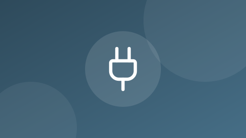

Pannes numériques et cyberattaques : comment tenir 72 h sans réseau ni paiement par carte
Une grande panne informatique reste rare, et elle est presque toujours réparée en quelques heures ou quelques jours. Ceux qui ont anticipé la vivent sans stress : ils ont de quoi payer, s'informer et joindre leurs proches. Quatre gestes simples suffisent.

En cas d'urgence vitale, appelez le 112. Il reste joignable même si votre forfait ne fonctionne plus, dès qu'un réseau mobile est disponible.
L'essentiel
- Garder un peu d'argent liquide.
- S'informer de façon fiable sans internet.
- Garder les informations vitales sur papier.
- Prévoir le matériel et l'énergie.
Ce qui bloque en premier lors d'une panne numérique majeure
- Le paiement par carte : terminaux de paiement des commerces, caisses automatiques, paiement sans contact et par téléphone.
- Les distributeurs de billets, qui dépendent eux aussi des réseaux bancaires.
- Le réseau mobile et internet : appels, SMS, messageries, sites et applications.
- Certains transports : billetterie, information voyageurs, parfois la circulation elle-même.
- Vos documents dématérialisés : ordonnances, titres, contrats ou contacts stockés en ligne ou dans le cloud.
Les 4 réflexes essentiels pour tenir 72 heures
1. Garder un peu d'argent liquide
Si les cartes ne passent plus, les espèces restent le moyen de paiement le plus simple pour acheter à manger, des médicaments ou du carburant.
- Quel montant ? Il n'existe pas de chiffre officiel en France. Prévoyez de quoi couvrir quelques jours de dépenses essentielles pour votre foyer. À titre de repère, les Pays-Bas conseillent environ 70 € par adulte et 30 € par enfant pour trois jours de dépenses essentielles.
- Quelles coupures ? Des petites coupures (5, 10 et 20 €) et quelques pièces : les commerçants n'auront pas toujours la monnaie.
- Où le ranger ? Dans votre kit d'urgence, dans une enveloppe, à un endroit connu de votre foyer mais discret. Ne le transportez pas en permanence.
2. S'informer de façon fiable sans internet
Quand internet ne fonctionne plus, la radio reste le premier canal d'information des autorités.
- Une radio à piles (ou à manivelle), qui capte la FM et si possible le DAB+, avec des piles de rechange.
- Les stations du service public, qui relaient les consignes des autorités en cas de crise : France Inter et ICI (anciennement France Bleu) pour l'information locale. Notez à l'avance leurs fréquences dans votre région, sur papier.
- FR-Alert envoie des alertes sur les téléphones présents dans la zone concernée, mais seulement si le réseau mobile fonctionne.
- Face aux rumeurs :
- vérifiez toujours l'information auprès d'une source officielle : préfecture, mairie, info.gouv.fr, radio ;
- ne relayez pas une alerte ou une capture d'écran dont vous ne connaissez pas l'origine ;
- méfiez-vous des messages qui poussent à agir vite (« partagez à tous vos contacts », « allez retirer votre argent ») : la précipitation est souvent ce que recherche une rumeur.
3. Garder les informations vitales sur papier
Si votre téléphone est déchargé ou si vos comptes en ligne sont inaccessibles, le papier fonctionne toujours.
- Photocopies des pièces d'identité, de la carte Vitale, des ordonnances en cours et des documents d'assurance, dans une pochette étanche.
- Les numéros d'urgence :
- Les contacts de vos proches notés sur papier : famille, voisins, médecin traitant, école des enfants. Peu de gens connaissent ces numéros par cœur.
- Un lieu de rendez-vous convenu à l'avance avec votre famille, si vous ne pouvez plus vous joindre.
4. Prévoir le matériel et l'énergie
- Une batterie externe chargée, rechargée tous les trois mois environ.
- Une lampe de poche ou frontale, avec des piles de rechange.
- La checklist Tous prêts : une fois ouverte une première fois, elle fonctionne sans connexion et vos données restent sur votre appareil. Vous y retrouvez votre liste, vos quantités et vos contacts même sans réseau.
En cas de coupure de courant en plus de la panne numérique : que faire en cas de coupure d'électricité.
Pendant et après l'incident : les bons réflexes numériques
Les escrocs profitent souvent d'une panne ou d'une cyberattaque très médiatisée.
- Ne cliquez pas sur les SMS ou courriels de « remboursement », de « colis bloqué » ou de « mise à jour de sécurité » liés à l'incident. Votre banque ou un service public ne vous demandera jamais vos codes par message.
- Si vous êtes personnellement victime (compte piraté, appareil bloqué, demande de rançon) :
- conservez les preuves : captures d'écran, messages, adresses, dates ;
- ne payez aucune rançon ;
- faites-vous aider sur cybermalveillance.gouv.fr et signalez l'infraction sur 17Cyber (17cyber.gouv.fr) ;
- changez vos mots de passe depuis un appareil sain.
- Suivez les consignes de la préfecture et des autorités : elles seules disent quand la situation est rétablie.
Si vous êtes personnellement victime d'une attaque : Cyberattaque : que faire ?
Prêt à vous organiser ? Préparez votre kit avec la checklist interactive du kit d'urgence 72 h : gratuite, sans compte et utilisable hors ligne.
Sources : guide « Tous responsables » (SGDSN, 2025), ANSSI, Banque centrale des Pays-Bas (DNB, conseil du MOB, 2025), cybermalveillance.gouv.fr, 17Cyber, info.gouv.fr/risques. Tous prêts est un site citoyen indépendant : il ne remplace pas les consignes des autorités. En cas d'urgence vitale, le 112 prime toujours.
Questions fréquentes
Combien d'argent liquide garder chez soi ?
Il n'y a pas de montant officiel en France. L'idée est de pouvoir couvrir quelques jours de dépenses essentielles (nourriture, pharmacie, carburant) pour votre foyer, en petites coupures et en pièces. Gardez une somme raisonnable, rangée dans votre kit, plutôt qu'une grosse réserve.
Comment recevoir les alertes si internet est coupé ?
Par la radio à piles : les stations du service public relaient les consignes des autorités. Les sirènes d'alerte fonctionnent sans internet. FR-Alert passe par le réseau mobile : il ne vous joindra que si une antenne fonctionne. Votre mairie peut aussi informer la population sur place.
Faut-il faire des réserves alimentaires en cas de cyberattaque ?
Pas plus que pour toute autre crise. Le kit d'urgence 72 h suffit : eau (6 litres par personne), aliments qui se conservent et se mangent sans cuisson, médicaments. Les achats de panique créent eux-mêmes les ruptures en rayon : un foyer déjà préparé n'a pas besoin de se précipiter au magasin.
À lire aussi



Batterie et station électriqueComprendre les mAh et les Wh d'une batterie externe, choisir la capacité utile et éviter les risques de surchauffe ou de gonflement.